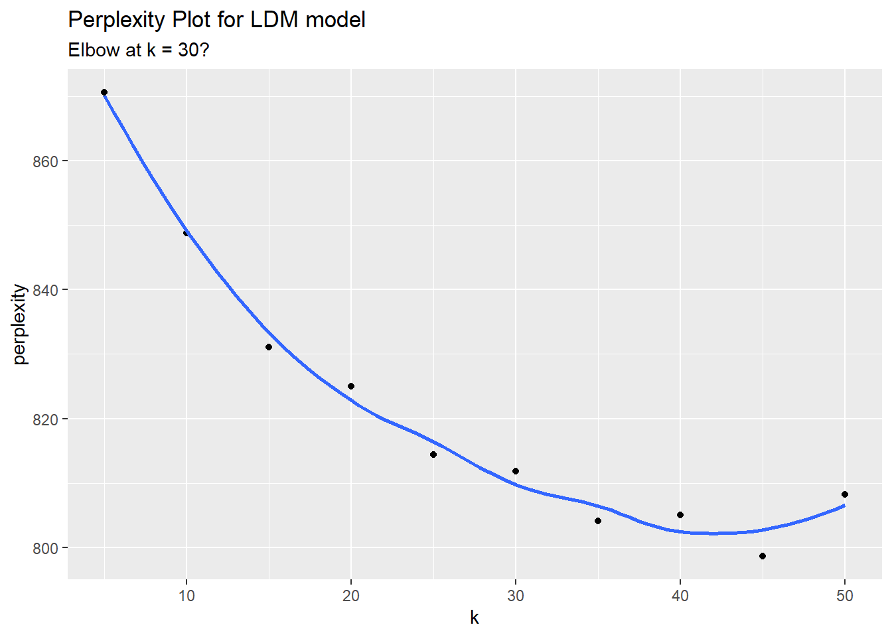
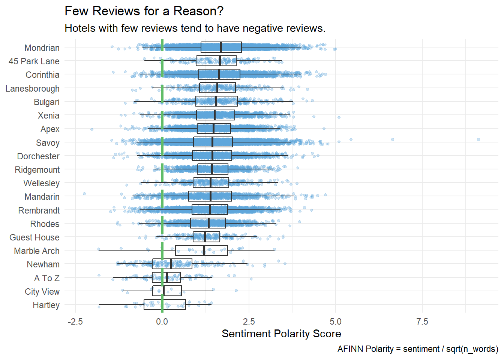
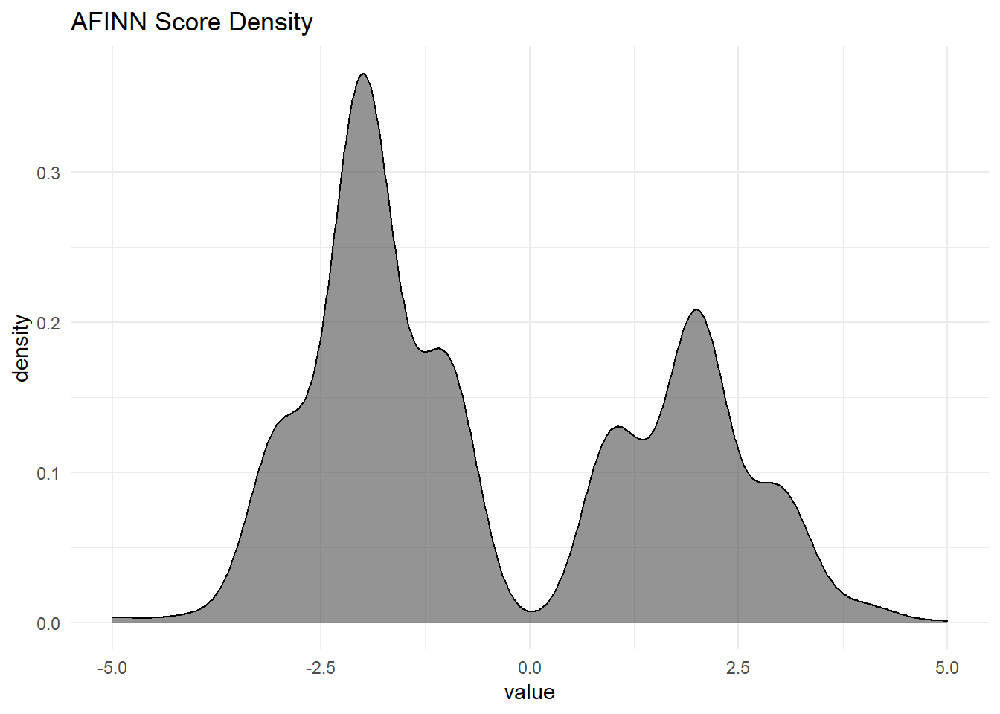

2.1 Topic Modeling Chapter
Topic models are generative probabilistic models to quantitatively investigate a large text corpora. In generative probability models, the researcher postulates a model of a data-generating process, then uses the corpus data to find the most likely values for the parameters within the model.
Topic models such as Latent Dirichlet Allocation (LDA) and Structural Topic Modeling (STM) treat documents within a corpora as a “bags of words” and identifies groups of words that tend to co-occur. These groups of words are the topics, formally conceptualized as probability distributions over vocabulary. While the topics are a product of model estimation, the topic name and interpretation are assigned by the researcher by examining the most important words for each topic and the particular texts featuring a topic most prominently. They are not produced to match words and documents to concrete issues specified in advance by the researcher as they would be in a supervised model.
LDA and STM are generative models, meaning you define a data generating process for each document then use the document text to find the most likely values for the model parameters. The generative model defines document-topic and word-topic distributions generating documents. The sum of topic proportions (topical prevalence) in each document is one, and the sum of word probabilities in each topic (topical content) is one. STM differs from LDA in that it uses document metadata as covariates to explain prevalence and topical content.
Whether you use LDA or STM, you’ll start by creating a bag-of-words representation of the data. In the chunk below, I lemmatize the tokens and remove my own list of stop words (e.g., “tom” is so common that I don’t want to include it in anything.)
my_stop_words <- c("tom")
sawyer_tokens <- sawyer %>%
unnest_tokens(output = "word", input = text, token = "words") %>%
mutate(word_stem = lemmatize_words(word)) %>%
anti_join(stop_words, by = "word") %>%
filter(!word %in% my_stop_words)It’s a good idea to explore the data before modeling. One good way to do that is with the TF-IDF statistic. A term’s frequency (TF) is its proportion of the words in the document. The inverse document frequency (IDF) is the log of the inverse ratio of documents in which the term appears. The product of TF and IDF (TF-IDF) indicates how important a word is to a document in a collection or corpus. In this case, the TF-IDF indicates how important a word is to the chapter. A term’s TF-IDF increases with its frequency in the document (chapter) and decreases with the number of documents (chapters) in the corpus that contain it. Use tidytext::bind_tf_idf() to append the tf, idf, and tf_idf columns to your data frame.
sawywer_tf_idf <- sawyer_tokens %>%
count(chapter, word_stem, sort = TRUE) %>%
bind_tf_idf(word_stem, chapter, n) %>%
group_by(chapter) %>%
slice_max(order_by = tf_idf, n = 10) %>%
ungroup()
sawywer_tf_idf %>%
filter(chapter <= 6) %>%
mutate(word_stem = reorder_within(word_stem, by = tf_idf, within = chapter)) %>%
ggplot(aes(word_stem, tf_idf, fill = as.factor(chapter))) +
geom_col(alpha = 0.8, show.legend = FALSE) +
scale_fill_manual(values = RColorBrewer::brewer.pal(n = 6, name = "Set2"), name = "Topic") +
facet_wrap(~ chapter, scales = "free", ncol = 3) +
scale_x_reordered() +
coord_flip() +
theme(strip.text=element_text(size=11)) +
labs(x = NULL, y = "tf-idf",
title = "Highest tf-idf words in The Adventures of Tom Sawyer (ch 1-6)",
subtitle = "Individual chapters focus on different characters and narrative elements")
2.1.1 LDA
LDA treats each document as a mixture of topics (X% topic A, Y% topic B, etc.), and each topic as a mixture of word probabilities (x% word a, y% word b, etc.) for all words in the corpus. LDA is implemented in the topicmodels package.
Prepare the data by creating a document-term matrix. You will improve performance by removing infrequently appearing tokens with tm::removeSparseTemrs().
sawyer_dtm <- sawyer_tokens %>%
count(chapter, word_stem) %>%
cast_dtm(document = chapter, term = word_stem, value = n) %>%
tm::removeSparseTerms(sparse = 0.9)
sawyer_dtm## <<DocumentTermMatrix (documents: 35, terms: 1213)>>
## Non-/sparse entries: 9933/32522
## Sparsity : 77%
## Maximal term length: 13
## Weighting : term frequency (tf)LDA is an optimization algorithm that performs a random search through the parameter space to find the model with the largest log-likelihood. There are multiple search algorithms, but the preferred one appears to be Gibbs sampling, a type of Monte Carlo Markov Chain (MCMC) algorithm.
Create a topic model with topicmodels::LDA(). Parameter k specifies the number of topics. In general, you only want as many topics as are clearly distinct and that you can easily communicate to others. You can use the perplexity statistic to help identify k. Perplexity is a measure of how well a probability model fits a new set of data. Look for the elbow in a scree plot. Here are models with 5 - 50 topics.
set.seed(1012)
train_ind <- sample(nrow(sawyer_dtm), floor(0.75*nrow(sawyer_dtm)))
sawyer_train <- sawyer_dtm[train_ind, ]
sawyer_test <- sawyer_dtm[-train_ind, ]
k = c(seq(from = 5, to = 50, by = 5))
perp <- k %>%
map(~ LDA(sawyer_train, k = .x, method = "Gibbs", control = list(seed = 1234))) %>%
map(~ perplexity(.x, newdata = sawyer_test)) %>%
as.numeric()
data.frame(k = k, perplexity = perp) %>%
ggplot(aes(x = k, y = perplexity)) +
geom_point() +
geom_smooth(method = "loess", se = FALSE) +
labs(title = "Perplexity Plot for LDM model",
subtitle = "Elbow at k = 30?")There may be an elbow at k = 15 topics. Using STM, the optimal number of clusters was 30. That looks like an elbow to me too. Frankly, if my arm looked like that I would consult an orthopedic surgeon.
LDA() returns two outputs: a “beta” matrix of probabilities of terms belonging to topics; a “gamma” matrix of probabilities of topics contributing to documents. The tidytext package provides a tidy() method for extracting these matrices.
sawyer_lda_beta <- tidy(sawyer_lda, matrix = "beta")
sawyer_lda_gamma <- tidy(sawyer_lda, matrix = "gamma", document_names = rownames(sawyer_dfm))
# All sums equal 1
# sawyer_lda_beta %>% group_by(topic) %>% summarize(.groups = "drop", sum_beta = sum(beta))
# sawyer_lda_gamma %>% group_by(document) %>% summarize(.groups = "drop", sum_beta = sum(gamma))I have 30 topics here, so it would be hard to show the top words per topic, but here are the first six topics.
sawyer_lda_beta %>%
filter(topic <= 6) %>%
group_by(topic) %>%
slice_max(order_by = beta, n = 10, with_ties = FALSE) %>%
mutate(term = reorder_within(term, beta, topic)) %>%
ggplot(aes(x = term, y = beta, fill = factor(topic))) +
geom_col(show.legend = FALSE) +
scale_fill_manual(values = RColorBrewer::brewer.pal(n = 6, name = "Set2"), name = "Topic") +
scale_x_reordered() +
coord_flip() +
facet_wrap(~ topic, scales = "free") +
labs(title = "LDA Beta Matrix for first six topics",
subtitle = "Showing top 10 word probabilities")
You can use a Word cloud as an alternative to the bar chart. The advantage of the word cloud is that it creates an instantaneous impression rather than providing you the analytic means to construct the same conclusion. Here are word clouds for the first two topics.
colors6 <- RColorBrewer::brewer.pal(n = 6, name = "Set2")
x <- map(c(1:2), ~ with(sawyer_lda_beta %>% filter(topic == .x),
wordcloud::wordcloud(term, beta, max.words = 20,
colors = colors6[.x])))
And here are the most prevalent topics across chapters. The figure shows the average probability that the topic appears in the chapter for all chapters.
top_terms <- sawyer_lda_beta %>%
group_by(topic) %>%
slice_max(order_by = beta, n = 7) %>%
summarise(.groups = "drop", terms = list(term)) %>%
mutate(terms = map(terms, paste, collapse = ", ")) %>%
unnest(terms)
sawyer_lda_gamma %>%
group_by(topic) %>%
summarize(.groups = "drop", gamma = mean(gamma)) %>%
left_join(top_terms, by = "topic") %>%
mutate(topic = paste("topic", topic),
topic = fct_reorder(topic, gamma)) %>%
slice_max(order_by = gamma, n = 10) %>%
ggplot(aes(x = topic, y = gamma, label = terms)) +
geom_col(fill = "#D8A7B1", show.legend = FALSE) +
geom_text(hjust = 0, nudge_y = 0.0005, size = 3) +
coord_flip() +
scale_y_continuous(expand = c(0,0),
limits = c(0, 0.09),
labels = scales::percent_format()) +
theme_minimal() +
theme(panel.grid = element_blank()) +
labs(x = NULL, y = expression(gamma),
title = "Top 10 LDA topics by prevalence in The Adentures of Tom Sawyer",
subtitle = "With top words in each topic")Another way to look at the betas is to identify terms that had the greatest difference in beta between the first and second most probable topic. A good way to do this is with their log ratio, \(log_2(\beta_2 / \beta_1)\). Filter for relatively common words having a beta greater than 1/100 in at least one topic.
sawyer_lda_beta %>%
mutate(topic = paste0("topic", topic)) %>%
group_by(term) %>%
slice_max(order_by = beta, n = 2) %>%
summarize(.groups = "drop", min_beta = min(beta), max_beta = max(beta)) %>%
filter(max_beta > 0.01) %>%
mutate(log_ratio = log2(max_beta / min_beta)) %>%
top_n(n = 20, w = abs(log_ratio)) %>%
arrange(-log_ratio) %>%
ggplot(aes(x = fct_rev(fct_inorder(term)), y = log_ratio)) +
geom_col(fill = "#D8A7B1") +
theme_minimal() +
coord_flip() +
labs(title = "LDA beta matrix log ratios",
subtitle = "showing greatest differences in beta values",
x = "", y = "log(beta ratio)")
2.1.2 STM
Prepare the data by creating a document-term matrix, just as you would with LDA, except this time use the cast_dfm() to create a document feature matrix for the quanteda package (the stm package uses quanteda). As LDA, you will improve performance by removing infrequently appearing tokens, this time with tm::removeSparseTemrs().
sawyer_dfm <- sawyer_tokens %>%
count(chapter, word_stem) %>%
cast_dfm(document = chapter, term = word_stem, value = n) %>%
quanteda::dfm_trim(min_docfreq = 0.1, docfreq_type = "prop")
sawyer_dfm## Document-feature matrix of: 35 documents, 1,213 features (76.6% sparse).
## features
## docs _do_ _got_ _is_ _will_ advantage adventure afraid afternoon age air
## 1 3 1 1 3 2 1 2 1 1 2
## 2 0 0 0 0 0 0 0 1 0 1
## 3 0 0 1 0 0 0 0 0 1 3
## 4 0 0 1 0 0 0 3 0 3 1
## 5 0 0 0 0 0 0 0 0 2 0
## 6 0 0 1 1 0 0 0 0 0 1
## [ reached max_ndoc ... 29 more documents, reached max_nfeat ... 1,203 more features ]Create a topic model with stm::stm(). Parameter K specifies the number of topics. In LDA I used perplexity to determine the optimal number of clusters, in part because that is the only optimizing metric it LDA() offers. stm offers other metrics, including the held-out likelihood and coherence. Here are models with 5 - 50 topics. This process can take a while, but the furrr package and future_map() function leverage parallel processing to make it quicker.
## Warning: package 'furrr' was built under R version 4.0.3## Loading required package: future## Warning: package 'future' was built under R version 4.0.3## Warning: Strategy 'multiprocess' is deprecated in future (>= 1.20.0). Instead,
## explicitly specify either 'multisession' or 'multicore'. In the current R
## session, 'multiprocess' equals 'multisession'.sawyer_stm_mdls <- data_frame(K = seq(from = 5, to = 50, by = 5)) %>%
mutate(mdl = future_map(K, ~stm(sawyer_dfm, K = ., verbose = FALSE),
.options = furrr_options(seed = 123)))## Warning: `data_frame()` is deprecated as of tibble 1.1.0.
## Please use `tibble()` instead.
## This warning is displayed once every 8 hours.
## Call `lifecycle::last_warnings()` to see where this warning was generated.## Loading required package: quanteda## Warning: Problem with `mutate()` input `mdl`.
## i package 'quanteda' was built under R version 4.0.2
## i Input `mdl` is `future_map(K, ~stm(sawyer_dfm, K = ., verbose = FALSE), .options = furrr_options(seed = 123))`.## Warning: package 'quanteda' was built under R version 4.0.2## Package version: 2.1.2## Parallel computing: 2 of 8 threads used.## See https://quanteda.io for tutorials and examples.##
## Attaching package: 'quanteda'## The following object is masked from 'package:utils':
##
## View## Loading required package: quanteda## Warning: Problem with `mutate()` input `mdl`.
## i package 'quanteda' was built under R version 4.0.2
## i Input `mdl` is `future_map(K, ~stm(sawyer_dfm, K = ., verbose = FALSE), .options = furrr_options(seed = 123))`.
## Warning: package 'quanteda' was built under R version 4.0.2## Package version: 2.1.2## Parallel computing: 2 of 8 threads used.## See https://quanteda.io for tutorials and examples.##
## Attaching package: 'quanteda'## The following object is masked from 'package:utils':
##
## View## Loading required package: quanteda## Warning: Problem with `mutate()` input `mdl`.
## i package 'quanteda' was built under R version 4.0.2
## i Input `mdl` is `future_map(K, ~stm(sawyer_dfm, K = ., verbose = FALSE), .options = furrr_options(seed = 123))`.
## Warning: package 'quanteda' was built under R version 4.0.2## Package version: 2.1.2## Parallel computing: 2 of 8 threads used.## See https://quanteda.io for tutorials and examples.##
## Attaching package: 'quanteda'## The following object is masked from 'package:utils':
##
## View## Loading required package: quanteda## Warning: Problem with `mutate()` input `mdl`.
## i package 'quanteda' was built under R version 4.0.2
## i Input `mdl` is `future_map(K, ~stm(sawyer_dfm, K = ., verbose = FALSE), .options = furrr_options(seed = 123))`.
## Warning: package 'quanteda' was built under R version 4.0.2## Package version: 2.1.2## Parallel computing: 2 of 8 threads used.## See https://quanteda.io for tutorials and examples.##
## Attaching package: 'quanteda'## The following object is masked from 'package:utils':
##
## View## Loading required package: quanteda## Warning: Problem with `mutate()` input `mdl`.
## i package 'quanteda' was built under R version 4.0.2
## i Input `mdl` is `future_map(K, ~stm(sawyer_dfm, K = ., verbose = FALSE), .options = furrr_options(seed = 123))`.
## Warning: package 'quanteda' was built under R version 4.0.2## Package version: 2.1.2## Parallel computing: 2 of 8 threads used.## See https://quanteda.io for tutorials and examples.##
## Attaching package: 'quanteda'## The following object is masked from 'package:utils':
##
## View## Loading required package: quanteda## Warning: Problem with `mutate()` input `mdl`.
## i package 'quanteda' was built under R version 4.0.2
## i Input `mdl` is `future_map(K, ~stm(sawyer_dfm, K = ., verbose = FALSE), .options = furrr_options(seed = 123))`.
## Warning: package 'quanteda' was built under R version 4.0.2## Package version: 2.1.2## Parallel computing: 2 of 8 threads used.## See https://quanteda.io for tutorials and examples.##
## Attaching package: 'quanteda'## The following object is masked from 'package:utils':
##
## View## Loading required package: quanteda## Warning: Problem with `mutate()` input `mdl`.
## i package 'quanteda' was built under R version 4.0.2
## i Input `mdl` is `future_map(K, ~stm(sawyer_dfm, K = ., verbose = FALSE), .options = furrr_options(seed = 123))`.
## Warning: package 'quanteda' was built under R version 4.0.2## Package version: 2.1.2## Parallel computing: 2 of 8 threads used.## See https://quanteda.io for tutorials and examples.##
## Attaching package: 'quanteda'## The following object is masked from 'package:utils':
##
## View## Loading required package: quanteda## Warning: Problem with `mutate()` input `mdl`.
## i package 'quanteda' was built under R version 4.0.2
## i Input `mdl` is `future_map(K, ~stm(sawyer_dfm, K = ., verbose = FALSE), .options = furrr_options(seed = 123))`.
## Warning: package 'quanteda' was built under R version 4.0.2## Package version: 2.1.2## Parallel computing: 2 of 8 threads used.## See https://quanteda.io for tutorials and examples.##
## Attaching package: 'quanteda'## The following object is masked from 'package:utils':
##
## Viewheldout <- make.heldout(sawyer_dfm)
k_result <- sawyer_stm_mdls %>%
mutate(exclusivity = map(mdl, exclusivity),
semantic_coherence = map(mdl, semanticCoherence, sawyer_dfm),
eval_heldout = map(mdl, eval.heldout, heldout$missing),
residual = map(mdl, checkResiduals, sawyer_dfm),
bound = map_dbl(mdl, ~max(.$convergence$bound)),
lfact = map_dbl(mdl, ~lfactorial(.$settings$dim$K)),
lbound = bound + lfact,
iterations = map_dbl(mdl, ~length(.$convergence$bound)))
k_result %>%
transmute(K,
`Lower bound` = lbound,
Residuals = map_dbl(residual, "dispersion"),
`Semantic coherence` = map_dbl(semantic_coherence, mean),
`Held-out likelihood` = map_dbl(eval_heldout, "expected.heldout")) %>%
gather(Metric, Value, -K) %>%
ggplot(aes(K, Value, color = Metric)) +
geom_line(size = 1.5, alpha = 0.7, show.legend = FALSE) +
facet_wrap(~Metric, scales = "free_y") +
labs(x = "K (number of topics)",
y = NULL,
title = "Model diagnostics by number of topics",
subtitle = "These diagnostics indicate that a good number of topics would be around 60")The held-out likelihood is highest between 30 and 50, and the residuals are lowest at 20, so 30 might be the right number. Semantic coherence is maximized when the most probable words in a given topic frequently co-occur together. Coherence tends to fall as exclusivity increases. You’ll want the topic size that balances the trade-off.
k_result %>%
select(K, exclusivity, semantic_coherence) %>%
filter(K %in% c(20, 25, 30)) %>%
unnest(cols = c(exclusivity, semantic_coherence)) %>%
mutate(K = as.factor(K)) %>%
ggplot(aes(semantic_coherence, exclusivity, color = K)) +
geom_point(size = 2, alpha = 0.7) +
labs(x = "Semantic coherence",
y = "Exclusivity",
title = "Comparing exclusivity and semantic coherence",
subtitle = "Models with fewer topics have higher semantic coherence for more topics, but lower exclusivity")It looks like k = 30 may be optimal.
Like LDA(), stm() returns two outputs: a “beta” matrix of probabilities of terms belonging to topics; a “gamma” matrix of probabilities of topics contributing to documents. The tidytext package provides a tidy() method for extracting these matrices.
sawyer_stm_beta <- tidy(sawyer_stm, matrix = "beta")
sawyer_stm_gamma <- tidy(sawyer_stm, matrix = "gamma", document_names = rownames(sawyer_dfm)) I have 30 topics here, so it would be hard to show the top words per topic, but here are the first six topics.
sawyer_stm_beta %>%
filter(topic <= 6) %>%
group_by(topic) %>%
slice_max(order_by = beta, n = 10, with_ties = FALSE) %>%
mutate(term = reorder_within(term, beta, topic)) %>%
ggplot(aes(x = term, y = beta, fill = factor(topic))) +
geom_col(show.legend = FALSE) +
scale_fill_manual(values = RColorBrewer::brewer.pal(n = 6, name = "Set2"), name = "Topic") +
scale_x_reordered() +
coord_flip() +
facet_wrap(~ topic, scales = "free") +
labs(title = "STM Beta Matrix for first six topics",
subtitle = "Showing top 10 word probabilities")
Here is a Word cloud representation.
colors6 <- RColorBrewer::brewer.pal(n = 6, name = "Set2")
x <- map(c(1:2), ~ with(sawyer_stm_beta %>% filter(topic == .x),
wordcloud::wordcloud(term, beta, max.words = 20,
colors = colors6[.x])))
And here are the most prevalent topics across chapters.
top_terms <- sawyer_stm_beta %>%
group_by(topic) %>%
slice_max(order_by = beta, n = 7) %>%
summarise(.groups = "drop", terms = list(term)) %>%
mutate(terms = map(terms, paste, collapse = ", ")) %>%
unnest(terms)
sawyer_stm_gamma %>%
group_by(topic) %>%
summarize(.groups = "drop", gamma = mean(gamma)) %>%
left_join(top_terms, by = "topic") %>%
mutate(topic = paste("topic", topic),
topic = fct_reorder(topic, gamma)) %>%
slice_max(order_by = gamma, n = 10) %>%
ggplot(aes(x = topic, y = gamma, label = terms)) +
geom_col(fill = "#D8A7B1", show.legend = FALSE) +
geom_text(hjust = 0, nudge_y = 0.0005, size = 3) +
coord_flip() +
scale_y_continuous(expand = c(0,0),
limits = c(0, 0.09),
labels = scales::percent_format()) +
theme_minimal() +
theme(panel.grid = element_blank()) +
labs(x = NULL, y = expression(gamma),
title = "Top 10 STM topics by prevalence in The Adentures of Tom Sawyer",
subtitle = "With top words in each topic")
Another way to look at the betas is to identify terms that had the greatest difference in beta between the first and second most probable topic. A good way to do this is with their log ratio, \(log_2(\beta_2 / \beta_1)\). Filter for relatively common words having a beta greater than 1/100 in at least one topic.
sawyer_stm_beta %>%
mutate(topic = paste0("topic", topic)) %>%
group_by(term) %>%
slice_max(order_by = beta, n = 2) %>%
summarize(.groups = "drop", min_beta = min(beta)+.001, max_beta = max(beta)+.001) %>%
filter(max_beta > 0.01) %>%
mutate(log_ratio = log2(max_beta / min_beta)) %>%
top_n(n = 20, w = abs(log_ratio)) %>%
arrange(-log_ratio) %>%
ggplot(aes(x = fct_rev(fct_inorder(term)), y = log_ratio)) +
geom_col(fill = "#D8A7B1") +
theme_minimal() +
coord_flip() +
labs(title = "STM beta matrix log ratios",
subtitle = "showing greatest differences in beta values",
x = "", y = "log(beta ratio)")